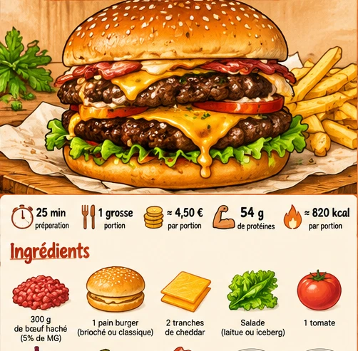

Double smash burger
Deux steaks fins, cheddar fondu, tomate, salade et sauce burger.
⏱ 25 min🍽 1 grosse portion💰 5 à 7 €💪 ≈ 57 g protéines≈ 1000 kcal
Ingrédients
- 250 g de bœuf haché (2 steaks de 125 g)
- 1 grand pain burger
- 2 tranches de cheddar (environ 40 g)
- 40 g de tomate
- 25 g de laitue
- 30 g d’oignon rouge
- 20 g de cornichons
- 15 g de mayonnaise
- 10 g de ketchup
- 1 c. à café de moutarde
- Sel et poivre
- 150 g de pommes de terre pour accompagner (facultatif)
Préparation
- Laver la salade et la tomate. Trancher l’oignon, la tomate et les cornichons. Mélanger mayonnaise, ketchup et moutarde.
- Former deux boules de bœuf de 125 g sans trop les travailler. Chauffer fortement une poêle adaptée.
- Déposer une boule de viande dans la poêle, puis l’écraser immédiatement à l’aide d’une spatule rigide. Répéter avec la deuxième. Cuire jusqu’à coloration puis retourner.
- Ajouter une tranche de cheddar sur chaque steak et prolonger la cuisson jusqu’à ce que le bœuf soit bien cuit à cœur.
- Faire griller le pain à sec. Monter le burger avec sauce, salade, tomate, deux steaks au cheddar, oignon et cornichons. Servir aussitôt. Si ajout de potatoes, les cuire à l’air fryer 18 à 22 min à 190 °C en les retournant à mi-cuisson.
Conservation et réchauffage
Meilleur juste après préparation. En cas de restes, séparer les légumes froids, réfrigérer la viande rapidement et la consommer dans les 24 heures après réchauffage complet.
Prix et nutrition : estimations indicatives. Les valeurs exactes dépendent des produits et marques ; à saisir dans MyFitnessPal pour un calcul personnalisé.